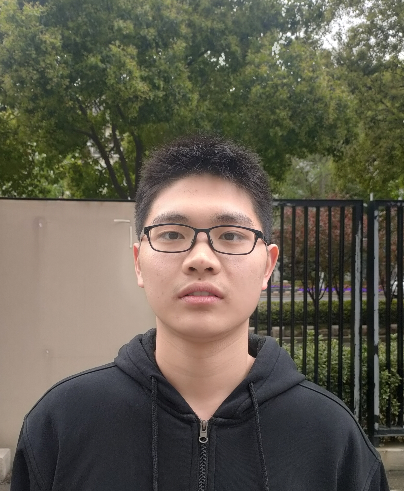

|  | Programming Languages Laboratory School of Computer Science Peking University |
|---|
| I am now a first-year Ph.D student at Peking University advised by Prof. Zhenjiang Hu. I completed my undergraduate at Nanjing University. |
| Research |
|
My research interest is in programming languages and software engineering in general,
and bidirectional transformation(BX) in particular.
Publications [Google Scholar]
|
| Academic Activities |
| ... |
| Teaching |
| ... |
| Contact Information |
| Email: wangfs at stu.pku.edu.cn |